Peluang Usaha Minuman Nyoklat Super
NYOKLAT SUPER
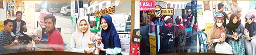
PAKET USAHA NYOKLAT SUPER
PAKET BOOTH
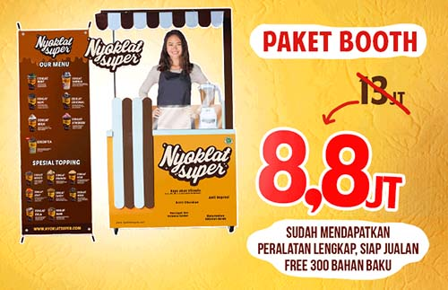
HARGA DARI 13 JT DISKON JADI 8,8JT
SUDAH MENDAPATKAN PERALATAN LENGKAP, SIAP JUALAN, FREE 300 BAHAN BAKU
PAKET TENDA
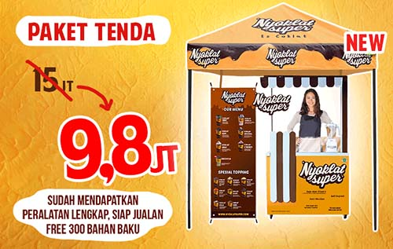
HARGA DARI 15 JT DISKON JADI 9,8JT
SUDAH MENDAPATKAN PERALATAN LENGKAP, SIAP JUALAN, FREE 300 BAHAN BAKU
PAKET TANPA
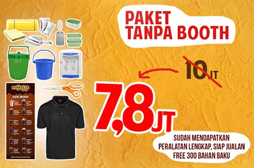
HARGA DARI 10 JT DISKON JADI 7,8JT
SUDAH MENDAPATKAN PERALATAN LENGKAP, SIAP JUALAN, FREE 300 BAHAN BAKU
DAPATKAN KEUNTUNGAN HINGGA 20JT/ BULAN
GATHERING NYOKLAT SUPER
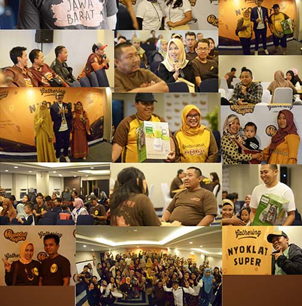
PELUANG BESAR MENJADI MASTER FRANCHISE
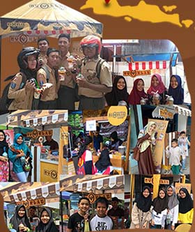
JADILAH MASTER FRANCHISE DAN KUASAI KOTAMU SEKARANG JUGA!
NEW CUP & NEW FLAVOUR
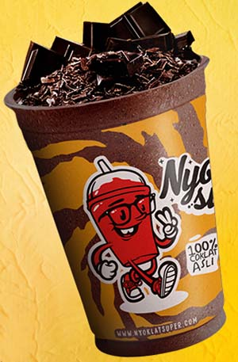
DESAIN CUP BARU
Kami menyediakan desain cup terbaru yang kekinian untuk para mitra Nyoklat Super, sehingga akan menarik minat konsumen dan secara otomatis akan meningkatkan penjualan Anda.
INOVASI RASA TERBARU
Rasakan inovasi kesegaran rasa baru dari Nyoklat Super, dengan kenikmatan coklat ditambah sensasi kesegaran dari mint, nantikan inovasi selanjutnya dari Nyoklat Super.
MITRA SUKSES NYOKLAT SUPER
WAHYU YUSUPU GARUT
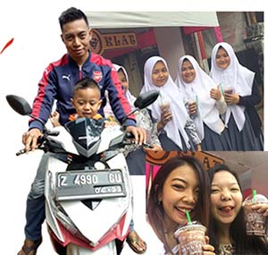
Penjualan bapak Wahyu berkisar diangka 180 sampai dengan 250 cup per hari, kini dengan penjualan diatas rata-rata bapak satu anak ini mampu membeli rumah, kendaraan bermotor dan persiapan membuka gerai baru di kotanya.
DESSY HARYANTI DEPOK
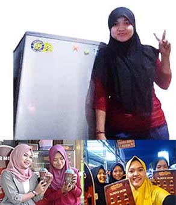
Ibu Dessy Haryanti bergabung menjadi mitra Nyoklat Super sejak bulan Desember 2016, rata-rata perharinya beliau mampu menjual 70 sampai dengan 90 cup Nyoklat Super. Seiring berkembangnya usaha milik Ibu Dessy kini beliau mampu untuk menghidupi 2 karyawannya dan membeli peralatan rumah lengkap bahkan mampu untuk menyewa ruko untuk usahanya. Luar biasaaa! Sukses untuk Ibu Desy!
AFRIDUL AFRI CIANJUR
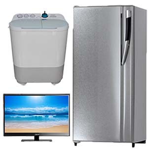
Bapak Afridul mampu menjual 90 sampai dengan 110 cup Nyoklat Super dalam sehari. Hasil keuntungan yang beliau peroleh dapat dipergunakan untuk membeli peralatan dan keperluan rumah tangga seperti kulkas, mesin cuci, spring bed, tv, sepeda dan tidak lupa alat kecantikan untuk istrinya.
NY. SUWANTORO BANDUNG
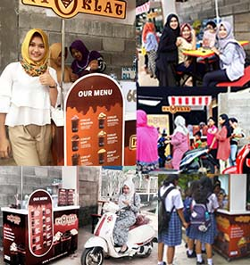
Suami dari nyonya Suwantoro atau bapak Suwantoro adalah mitra Nyoklat Super asal Bandung. Beliau berkolaborasi dengan istrinya nyonya Suwantoro dalam menjalankan usaha Nyoklat Super. Dengan menerapkan konsep cafe pada gerai Nyoklat Super miliknya secara langsung berdampak pada angka penjualan outlet. Pada usia yang masih terbilang baru gerai bapak Suwantoro memiliki angka penjualan yang cukup FANTASTIS dikisaran 180-250 cup sehingga dalam waktu singkat keuntungan dari berjualan Nyoklat Super yang beliau peroleh dapat digunakan untuk membeli satu buah unit motor Yamaha N-Max.
KEUNGGULAN YANG KAMI MILIKI
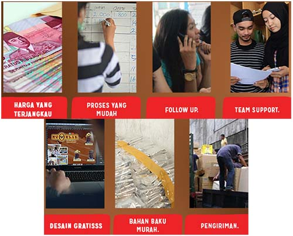
Banyak keuntungan yang dapat diperoleh jika Anda bergabung menjadi mitra Nyoklat Super. Yuk cari tau apa saja sih keuntungannya?
Harga franchise murah dan lengkap, langsung siap jualan
Nyoklat Super dapat disajikan dalam kondisi dingin maupun hangat
Nyoklat Super sangat poluler, terutama bagi masyarakat Indonesia
Free Royalti semua keuntungan hanya milik Anda
Nyoklat Super dapat dikombinasikan dengan berbagai topping
Kami selalu berinovasi untuk memberikan produk terbaik
KERAMAIAN OUTLET NYOKLAT SUPER
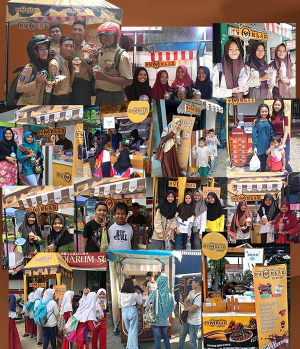
Terbukti Nyoklat Super banyak disukai & digemari seluruh kalangan masyarakat
TESTIMONI MITRA
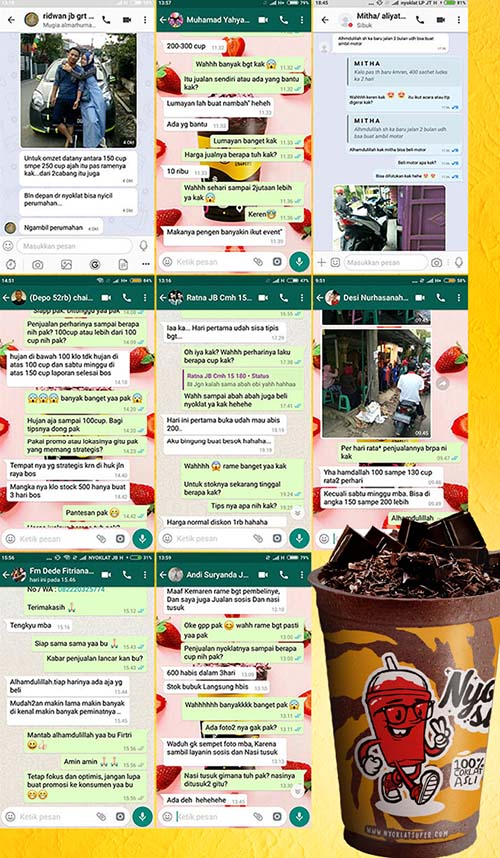
VARIAN MENU NYOKLAT SUPER
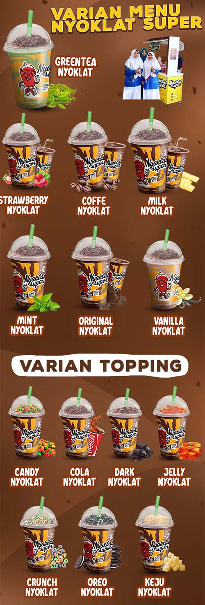
GREEN TEA NYOKLAT
Perpaduan yang pas antara coklat dengan teh hijau memiliki rasa yang khas racikan special ala nyoklat.
STRAWBERRY NYOKLAT
Rasa strawberry yang segar berpadu dengan manisnya coklat terasa fresh pecah di mulut.
COFFEE NYOKLAT
Campuran kafein pada coklat membuat mata menjadi semakin segar dan bersemangat.
MILK NYOKLAT
Gurih dan manis antara campuran coklat dan susu yang terasa pas di lidah.
MINT NYOKLAT
Segarnya rasa daun mint alami yang dipetik dari pegunungan membuat sensasi rasa baru pada minuman coklat.
ORIGINAL NYOKLAT
Minuman unggulan dari Nyoklat Super rasa asli coklat tanpa perpaduan rasa yang lain.
VANILA NYOKLAT
Vanila dan coklat berpadu menjadi minuman yang harum dan lezat membuat lidah kita bergoyang.
VARIAN TOPPING
CANDY NYOKLAT
COLA NYOKLAT
DARK NYOKLAT
JELLY NYOKLAT
CRUNCH NYOKLAT
OREO NYOKLAT
KEJU NYOKLAT
PERHITUNGAN KEUNTUNGAN
ROI (Return of Investment) untuk penjualan di sekolah :
Investasi awal : Rp 8.800.000,-
Penjualan 100 cup/ hari @ 7.000,- : Rp 21.000.000,-
(100x7000x30)
Pembelian bahan baku : Rp 9.600.000,-
(100x3200x30)
Pembelian topping : Rp 800.000,-
Gaji karyawan : Rp 700.000,- Sewa lokasi : Rp 1000.000,- dan lain-lain : Rp 300.000,- Total biaya operasional : Rp 2.000.000,-
LABA BERSIH 21.000.000-9.600.000-800.000-2.000.000 = Rp 8.600.000,-
B.E.P 2 BULAN
MANAGEMENT NYOKLAT SUPER
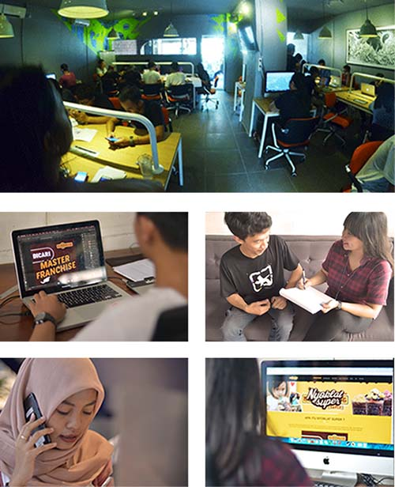
Kami memiliki team management yang akan membantu mitra untuk mendapatkan penjualan tertinggi
KEUNTUNGAN YANG DIDAPAT
Kami memberikan berbagai fasilitas untuk mitra yang telah bergabung dalam usaha Nyoklat Super, sehingga bisa mendapatkan pendapatan yang tinggi.
HARGA YANG TERJANGKAU
Hanya dengan modal 8jt rupiah Anda sudah bisa memiliki usaha Nyoklat Super
PROSES YANG MUDAH
Dalam menjalankan Nyoklat Super, Anda kami beri kemudahan dalam pengelolaan
- FOLLOW UP
Team Nyoklat Super siap membantu Anda dalam menjalankan usaha
- TEAM SUPPORT
Jika Anda mengalami kesulitan penjualan, team support kami siap membantu 24 jam
- BAHAN BAKU MURAH
Bahan baku coklat dari kami adalah yang paling murah dan berkualitas memiliki racikan ala chef profesional.
- PENGIRIMAN
Kami menyediakan agen pengiriman demi kelancaran distribusi bahan baku maupun paket franchise.
- LAYANAN DESAIN GRATIS! Kami selalu siap membantu membuat gerai Anda lebih menarik dengan desain yang fresh dan up to date secara gratis.
MAJALAH NYOKLAT
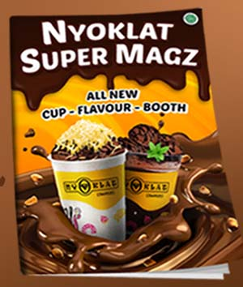
Dapatkan tips&trik strateg penjualan, serita mitra sukses, update terbaru.
F.A.Q
Beberapa pertanyaan dari calon mitra yang sering muncul & kami senantiasa memberikan solusinya
M = Bagaimana menjadi mitra Nyoklat Super? NS = Bisa lihat di persyaratan untuk menjadi mitra Nyoklat Super
M = Apa yang membedakan franchise Pisang Nugget Kece dengan yang lain?
NS = Franchise kami bisa dibuka di indoor maupun di outdoor. Dan Nyoklat Super berbeda dari franchise yang lainnya bukti yang real, bukan hanya testimonial
M = Apakah dikenai biaya dalam pengiriman booth?
NS = Biaya pengiriman ditanggung oleh mitra
M = Berapa ukuran booth Nyoklat Super?
NS = Kurang lebih 60cm x 120cm
M = Jika mitra sudah merasa cocok apa yang harus dilakukan?
NS = Langsung menghubungi bagian marketing untuk cara gabungnya
M = Setelah mengisi perjanjian kontrak apa yang harus dilakukan?
NS = Calon mitra bisa melakukan pelunasan dengan mentransfer uang senilai paket franchise yang dipilih ke rekening yang sudah diinformasikan oleh bagian marketing
M = Bagaimana jika dalam satu kota sudah ada outlet Nyoklat Super?
NS = Dalam satu kota tidak masalah ada beberapa outlet, asalkan radius antara outlet minimal 1 km
M = Untuk karwayan apakah disediakan dari pusat?
NS = Tidak,untuk karyawan disediakan oleh mitra
M = Bagaimana dengan training karyawan dan cara penyajian Nyoklat Super?
NS = Kami mengirim SOP berupa CD yang dikirim bersamaan dengan booth, yang bersifat mudah diterapkan
M = Apakah boleh jika berpindah lokasi dalam berjualan?
NS = Mitra boleh berpindah lokasi asalkan meminta ijin ke kantor pusat dan memberikan alamat lokasi yang baru sebelum berpindah tempat
M = Apakah mitra diperbolehkan dalam mengubah harga jual per porsi?
NS = Kami tidak mematok harga per porsi, kami hanya menyarankan untuk harga jual per porsi kisaran Rp 7.000 s/d Rp 10.000 disesuaikan dengan daya beli disekitar outlet
PERSYARATAN & FASILITAS UNTUK MITRA NYOKLAT SUPER
SYARAT
- Memiliki modal yang cukup untuk investasi sesuai harga paket franchise
- Memiliki komitmen terhadap bisnis ini untuk maju dan berkembang bersama
- Bersedia meluangkan waktu untuk terjun langsung mengawasi perkembangan outlet
- Memahami resiko bisnis
- Bersedia menaati peraturan yang ada dalam surat kerja sama
- Wajib membeli bahan baku dari pusat
FASILITAS
Lokasi berada di tempat strategis : didepan pusat keramaian /didepan sekolah - sekolah menengah keatas, kampus atau mini market
Luas ukuran tempat sewa minimal sesuai dengan ukuran counter ( 120 cm x 60 cm )
Karyawan
Tagar: #bisnis kuliner #nyoklat super #bisnis minuman #franchise minuman nyoklat super